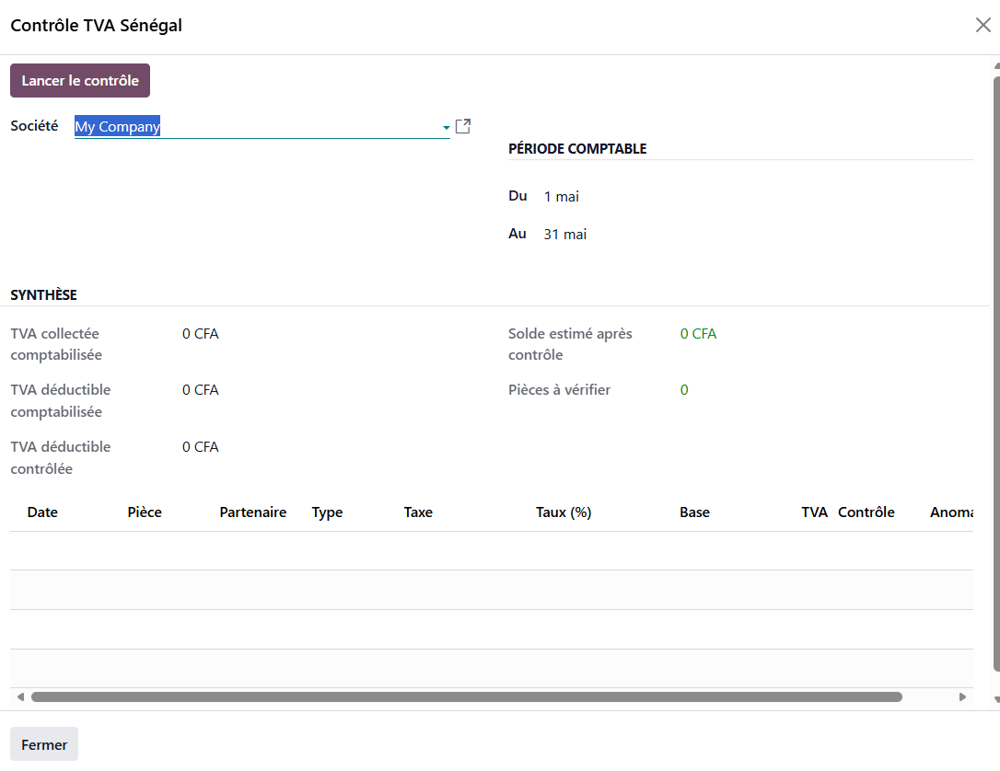
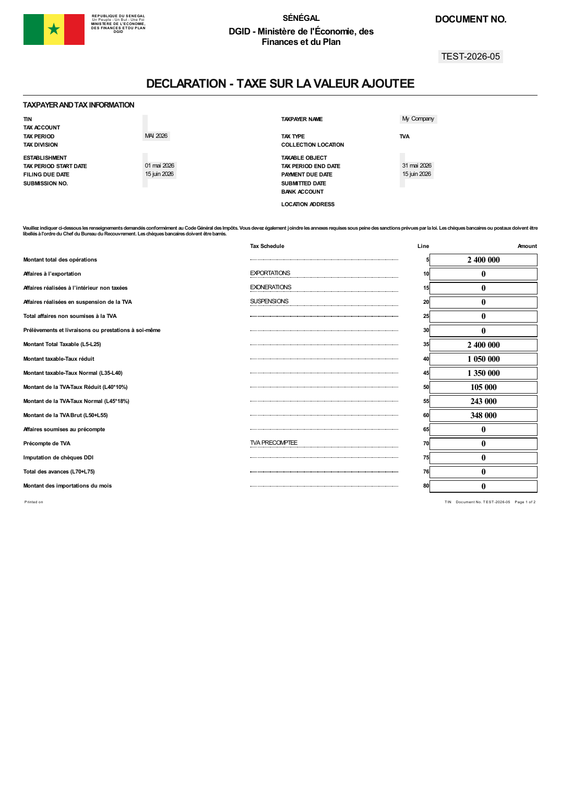
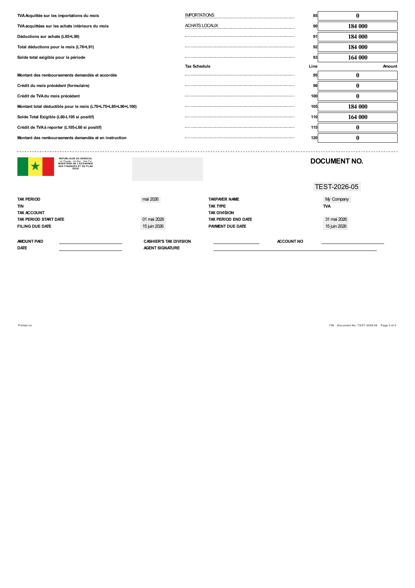

Secure the preparation of your Senegalese VAT return directly from Odoo Accounting.

Print the operational two-page A4 form used in Senegal, including tax lines 5 to 120 and the detachable payment slip.


The module extends l10n_sn and
l10n_sn_reports. It preserves Odoo's standard tax
engine and adds documentary controls, an audit workspace and
operational PDF printing.
Compatible with Odoo 19 Enterprise - developed by MMLY.